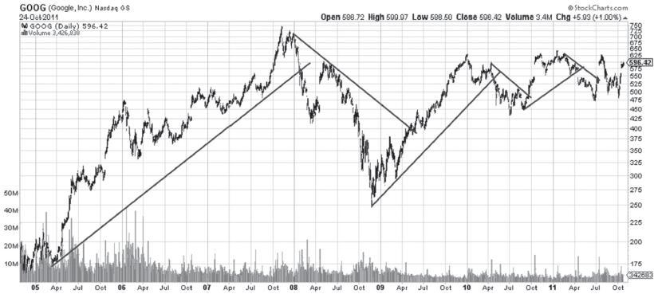

第23章 高风险股票的挑选和管理：郁金香股票、互联网板块和投机性狂热
世纪之交的互联网股票热潮淋漓尽致地展现了图表形态能够跨越时间的特点。此类股票重复上演着这一永恒的特性——郁金香狂热、淘金潮、不可错失的快钱机会。（参见本章图23-1～图23-17。）
对互联网和科技股的投机性狂热很容易让人联想到17世纪著名的荷兰郁金香热潮。查尔斯·麦基（Charles MacKay）在《大癫狂：非同寻常的大众幻想与群众性癫狂》（Extraordinary Popular Delusions and the Madness of Crowds）中有一段经典的分析：郁金香球茎的交易取代了该国正常的商业和贸易活动，有人也因此大发横财。大量实物资产如房地产、酿酒等均被用于交易，只为换取一个郁金香球茎。查尔斯·麦基说：“一只金色诱饵摆在人们面前，令人垂涎，疯狂的人群前仆后继，只为冲进郁金香集市，一如蜜罐旁的蝇虫。当时，大家都幻想着对郁金香的狂热永远不会消退，全球的财富也涌入荷兰，不惜任何代价地购买郁金香。”这是我在所有金融著作中最喜爱的一段话。
这一狂热最终以残局收场。互联网板块的长期前景也许更好，毕竟有技术和实质经济价值的支撑。在估值上，郁金香与互联网也没有可比性。而且，也的确有一小部分人在1849年的加州淘金潮中一夜暴富。任何事物都有其两面性。
在本书第7版中理查德·麦克德莫特（Richard McDermott）曾讲道：
诸如Lotus或微软等大公司上市后迅速成长为行业巨头……在20世纪90年代，互联网公司是当时重要的主题股之一。美国在线、CompuServe和网景等公司为个人用户提供了很多重要的互联网产品和服务，为人们打开了了解世界的窗口。
如今通过在线股票代码已很难搜到Lotus公司、CompuServe公司和网景了。IBM吞并了巨头Lotus，其中一个原因是来自微软的残酷竞争。类似地，CompuServe和网景也被美国在线公司（America Online）这条大鱼收入囊中。不久之后，微软受到了应有的惩罚——美国司法部对微软垄断行为的指控令其股价缩水一半。
图23-1 微软股票带给我们的教训。虽有亮点但好景不长。顶部走势结束后，股价进行二次试探，之后动能出现不明原因的显著下降。1月逃逸日的消除无疑证实该走势为多头陷阱，自10月开始的短线趋势对交易员来讲本是跳出陷阱的好时机。通过基准点技术（见第28章）也有助于逃离陷阱。此类衰竭信号通常是进行反向交易的绝佳指示
知名投行因向市场推销“半熟的土豆”（或未开花的郁金香）而备受指责。一些投行向公众兜售既不成熟也不赚钱的想法和公司，这些公司通常是那些被风投种子资金捧上市的互联网公司。投行因此赚得盆满钵溢。20世纪20年代投资信托的兴起，也开启了老牌金融企业的辉煌时代。我强烈建议读者阅读约翰·肯尼斯·加尔布雷思（John Kenneth Galbraith）的《1929年大崩盘》（The Great Crash1929）一书，对比一下在不同狂热事件中金融机构的行为。我相信读者会有所启发。在狂热的顶峰阶段，任何人都不可信。
图23-2 本图为微软公司的月线图。当出现令很多人损失惨重的多头陷阱时，如果只看日线图，我们很容易只见树木不见森林。将眼光放长远一些，观察微软公司的月线图，有助于我们把握整体趋势。不幸的是，道琼斯公司在2000年将微软公司加入道琼斯工业平均指数时，看的就是这张图。专家看法是怎样的？当时“约翰·迈吉投资通讯”称已看到道琼斯工业平均指数长线见顶的负面信号
23.1 管理郁金香狂热和互联网热潮
在狂热的大环境下，理智的投资者会保持冷静，不受外部影响。这说起来容易做起来难，但还是有很多投资者在互联网大繁荣中获利，或避免了大额损失。很多投资经理和交易员在股市飞涨时按兵不动，眼睁睁地看别人赚钱，在泡沫最终破灭时，又幸灾乐祸地看别人遭殃。
图23-3 本书编辑在这里学到了一课。即使图表的信号已经显而易见，也不要偷懒不做任何分析。永远不要害怕在分析显而易见的趋势时花费过多精力。显然，我们应该在本图上画一条长期趋势线。不要忽视明显的牛市。有赚钱的机会为什么要浪费呢？本图清楚地显示，微软公司的涨势已经结束。我们必须画一条保护性的趋势线。本图中，A线是最重要的，能帮我们提早避免资金损失，而不是等到C线发出信号时再止损。考虑到微软公司的长线牛市，长线投资者也有充分的理由等到C线被击穿后再采取行动。这是投资风格的问题。18美元处出现了一个长线支撑位。微软公司长达5年的横盘走势最终在2005年演变成了一个三角形，突破方向不明。此时，投资者可以通过基本面分析来做出投资方向的决定（但也要经过图表分析的验证）。当时，微软公司深陷泥潭：竞争对手众多（Linux、Unix）；Windows在中国只买出了一份；黑客不停攻击公司软件的安全漏洞。微软公司会东山再起吗？只有图表在默默记录一切。2011年，微软已经进入了横盘走势的第11个年头
对于按照本书所述原则进行交易或投机的技术分析师来说，他人的投机狂热和恐慌就是自己的交易机会，也就是说，当天真无知的投资者让泡沫破灭时，我们可以通过冷静、按部就班地操作来获利。
那么，问题是如何在这种狂热的环境下真正获利。当然了，首先要做的就是保持冷静。这种狂热的浪潮会以不同的主题反复出现：生物科技、计算机、互联网、有关人类基因奇迹的药品甚至是火星上的房地产。值得强调的是，做多或做空都可以获利。普通投资者只能想到多头的利润，而专业投资者和老练的技术分析师则会通过空头获利。
在交易这些价格飞涨的股票时，本书介绍的所有技巧和方法都适用 。此外，还有几个需要考虑的因素。我们提到的这几个行业：科技、网络技术、生物科技、互联网、太空旅行等都是一个独特的市场，带有特别的技术因素。这些股票的各个阶段（如建仓、吸筹、上涨、狂热和冲顶回落）往往更短。相较于建立在基本面数据上的个股来说，这些股票的各个阶段都要短得多（见图23-4：Palm Computing公司）。
图23-4 Palm Computing公司股价走势图。这正是所谓“愚人的黄金”。在第一个交易日，股价大幅冲高后反转。而在这套把戏结束之前，主力就已完成了建仓、拉高和大部分出货。在这场“大屠杀”之后，该股走出了一个圆底持续形态。或许真有黄金可淘，但目前看来只能做长线了
当一家公司到了IPO的阶段时，内部人士已经着手准备出货了。举例来说，2000年Palm Computing公司从3Com公司分拆上市时，只有3%的股份公开流通，人为创造出了股票稀缺的假象，将股价推高至荒唐的水平，而且Palm Computing公司的市价也超过了拥有其绝大多数股票的3Com公司。（第9版编者按：我们已学到一个新词：造梯（laddering）。内部客户想要拿到IPO的股票，会在承销商的要求下，在IPO后的公开市场以更高的价格买入更多的股票。这招完全是“火上浇油”的做法。但Palm公司当时是否出现了造梯的操作，我们就不得而知了。）
图23-5 券商偷走了Palm Computing公司的资本吗？交易该股票的资金几乎消失殆尽。你为什么觉得存在欺骗？首次公开募股中存在“造梯”行为吗？也许只是愚人在追逐郁金香。那些投资者（赌徒）和Palm Computing公司玩了一个藏豆游戏，却发现藏豆的碗不是3个，而是6个！狡猾的Palm Computing公司分立成了两家：PalmOne公司和PalmSource公司。对于此类“魔术”，你一定要看仔细。对分析师来说，所有的烟幕弹都无法掩盖一个事实，那就是Palm Computing公司股价一路向下。之后，该股于2003年和2004年两次突破下降趋势线，构筑了一个明显的头肩底。但是，这个底部的效力可能已经被消耗了。对于了解基本面、目光长远、身手敏捷的投机者和投资者来说，这是一个仍在继续的故事
若想交易这类股票，投资者必须提高警惕，小心行事，千万不要在IPO发行时以市价指令买入股票。发行价为12美元的股票在开市时可能会疯涨到50美元。对于技术分析师来说，这是有人要被宰了的信号。
此外，还有一些需要投资者牢记的经验之谈。一些股票的股价在IPO后迅速大跌，而另一些在出货结束前就开始暴涨。所以，止损的设置需要进行缜密的计算。一旦股价开始暴涨，并且有成交量配合，老练的投机者就可以开始低调地开始金字塔形加码（pyramiding）。

图23-6 PalmSource公司股价走势图。该股试图构筑一个圆底，但失败了。10月出现突破缺口后，股价未能反弹至颈线，这就表明该股将继续下跌。趋势线被击穿也是有技术意义的。别忘了，任何较大的形态都能被划分成若干较小的、可进行短期趋势线分析的形态，如本例所示。手掌般大小的计算机、个人数字助理（PDA）等设备迟早会风靡世界。（第10版编者按：这真是对iPhone手机的准确预测。）但是，精明的投资者不会将公司与股票混为一谈，在技术图表上尚未出现机会时，决不会拿钱去冒险
23.2 应对逃逸走势的技巧
第28章中介绍的紧密跟进止损法可用于交易此类股票。那一章对寻找基准点、抬高止损位的方法进行了详细介绍。对于暴涨的股票，确实应随着股价的攀升不断抬高止损位。因为暴涨往往是非理性的“博弈”，所以你不妨使用一些非常规的操作方法，比如少量的金字塔型加码、逢高分批出货等。此外，在股票的冲顶回落阶段，你需要密切关注走势，既可在多头反转日出逃，也可在关键反转形态中离场，甚至反手做空。
图23-7 3Com公司股价走势图。股票承销商很聪明，在Palm公司IPO时，只向市场投放了3Com公司所持Palm公司股票的3%，结果使得Palm公司的市值短暂地高于3Com公司。这是典型的“郁金香狂热”。请注意成交量的变化。你需要认真分析，才能有效应对此类个股。穿越水平趋势线的缺口尤其值得关注。“买入并持有”型投资者根本无法把握此类股票
在我眼里，这些个股是走势尚未稳定下来的有趣特例。所以，我不会对它们进行长线投资。有盈利就要及时落袋为安。这些股票的涨势完全可能如焰火一般，热闹一阵便宣告结束。当然，其中会有微软、雅虎这样的优质公司。焰火结束后，耐心的技术分析师可以返回“现场”，寻觅“真金”。当股价冲顶回落、崩盘、有效筑底以后，你就可以开始寻找投资机会。投资机会永远会有。互联网技术、生物技术、人体基因技术等都蕴藏着巨大潜能。
但从一开始，交易者就应牢记，这些股票是高风险、高收益的投机品种。
以下是几条告诫：
·第1条：谨慎的投机者不会向此类企业投入太多钱。一般只投最多5%～10%的资金。
·第2条：切莫太早卖空这些股票。要等明确的高点出现后再卖空，以防股价再次暴涨。
·第3条：情绪化地交易郁金香、互联网股或其他任何东西，都可能导致巨亏。要在技术图表上发现并把握关键反转日。

图23-8 甲骨文公司股价走势图。这又是一场“郁金香狂热”式的戏剧。若不认真分析，则难以应对该股的走势。股票拆分后，出现了几波抛售潮（请注意股票拆分后的缺口）。图上还有几处看涨缺口。顶点很明显。该股在专业交易者眼里代表着极好的机会，但对业余投资者也许意味着灾难
（第9版编者按：回顾历次股灾的技术图表，我们能得到很多启示。鲁莽、疯狂的戏剧一再上演。无数金钱被贪得无厌的股票承销商和不负责任的公司高管圈走。2005年狂炒谷歌又是一例。人总是不吸取教训，因此显得那么可笑。）
谷歌面对的，是怎样的人类、怎样的市场啊！谷歌是一家优秀的公司，在2004年经过全世界的火热宣传后首次公开募股。其作为非上市公司时的发行价为135美元，最终在一场创新型IPO中的发行价为85美元。然后好戏开演了。本书的未来读者可以观察一下截至目前（2004年11月）的涨幅，看看我们的方法是否有效。
图23-9 Inktomi公司（Inktomi Corp.）股价走势图。这是一个典型的互联网股泡沫。最后一条趋势线以及第二条水平趋势线，明确地宣告了狂欢已结束。股价随后跌破了长期趋势线，这是最后的离场信号。运用技术分析，可以很好地应对该股的走势
图23-10 伊美莱斯公司股价走势图。该股于2000年发生了急跌，这在非技术派投资者眼里或许不算什么。他们会继续持股，直至学到技术派投资者通晓的一条教训：股票常常重复同样的走势。该股在高位向下突破，形成巨大缺口，从110美元一路下跌至10美元！无视技术图表上的离场信号，就可能遭受巨大损失。参见图12-9和图37-43中的缺口
一家优秀的公司确实让人难以割舍，但是请记住：除非你是沃伦·巴菲特，否则你买的是股票，而不是公司。
23.3 希望不断涌现，每秒产生一个
你也许以为，随着人类进入新千年的第2个10年，“郁金香狂热”式的时代已经一去不复返了。如果你真这么想，那就太天真了！“郁金香狂热”式的时代根本没有结束。投资者现在热切追捧领英公司（LinkedIn）、Groupon公司的IPO，并且苦苦哀求Facebook公司也公开募股。但是，Facebook公司一边享用风险投资，一边要求更高估值。公众势必会被“剪羊毛”，正如Palm公司上市后的情形。
图23-11 亚马逊公司股价周线图。亚马逊在网络股热潮中疯狂起舞。在图上可看到，过度投机造成了多次急跌。在该股的日线图（见图23-12）上，你可看到更多细节

图23-12 亚马逊公司股价日线图。在投机性冲顶回落的过程中，趋势线基本没用。该股显然不是投资型股票。反应迟钝的交易者很可能在该股跳水时损失惨重，而高度警觉、懂得逢高派发的交易者则能赚到钱。其他技巧包括识别第2个衰竭缺口并及时离场。此外，交易者还可运用第28章所述的技巧，通过设置紧密跟进止损位来躲避杀跌
你可以买入此类股票，但你必须时刻盯着股价走势，投机的过程不会很轻松。除非你有丰富的投机经验并且在此类交易中亏过钱，否则不要轻易入场，切莫轻信任何投资建议。
图23-13 亚马逊公司股价周线图。互联网热潮是投机客（赌徒）的乐园，而亚马逊股票是个典型。理性的分析者能在图上看到一个清晰的顶部，股价跌破了数条趋势线和水平线，经历了一波熊市，构筑了一个头肩底，然后明确地向上突破，经历了另一波牛市，接着又调头向下。操作如此动荡的个股是需要勇气的，但你可运用技术分析来驾驭它。若拒绝使用技术分析，你就会被别人轻易地捕食
图23-14 思科系统公司股价走势图。第1条长期趋势线在一个缺口处与下降趋势完美相交。第2条长期趋势线具有很强的效力，因此当它被有效击穿时，就连新手分析师也知道该离场了。事实上，我的一名学生（思科系统公司的员工）正是按此操作，逃过了一劫
图23-15 交易者有办法躲避这张图上的暴跌吗？一个办法是保持极端的谨慎，另一个办法是精准把握思科股票在图23-14中体现出来的走势特点
图23-16 你以为2000年互联网股泡沫破灭后就不会再有投机狂热？太天真了。投机活动真可谓“生生不息”。你需要的只是一家公司、一个故事、一家股票承销商。有时这家公司甚至有盈利，有时公司的盈利甚至是真的，有时公司的盈利迅速飙升，有时公司的质地好到令你几乎愿意按面值认购IPO的股票。但如果你是一名技术派分析师，你就不会这样。市场传言谷歌在IPO后可以涨到200美元或更高。本书编辑在200美元价位下达清仓指令。该指令（也许还有其他因素）将IPO价格砸到了85美元（仍处于疯狂投机的水平）。谷歌创新型募股过程中的超额认购表明，“郁金香狂热”的病毒并未绝迹，反而仍很活跃，四处传染。我们喜爱赌马，而谷歌是一匹好马。请注意图上的防御线、支撑位及阻力位。谷歌股价还能抗拒地心引力多久（其市盈率已达天文数字），目前还不得而知。谨慎的赌徒会设置止损位。在这张图上，对于长线赌徒来说，止损位也许应设在182美元一带。而对于短线赌徒来说，当股价在204美元处击穿阻力位或回补突破缺口时，也许就该立即止损。这里的“赌徒”并不带有贬义。事实上，大胆的投资者（在熟读本书的基础上）应该不时地用5%左右的资金从事短线投机。这张图上10月和4月的突破缺口具有极强的技术意义。谷歌股价最终飙升到了475美元！这张图给我们的教训是：要信图表。至于那些故事，大可忽略。谷歌股价在2008年达到了700美元，之后腰斩，接着回升至600美元，然后横盘两年

图23-17 2011年谷歌公司股价走势图。谷歌的广告业务相当成功。在这张图上，读者只需借助几条趋势线，就能把握该股的交易机会，躲避“蹦极”式的暴跌。基准点的用法和效果与趋势线差不多。谷歌股价自2010年以来长期宽幅横盘，一旦突破了这个横盘区域，应会出现大幅上涨或下跌